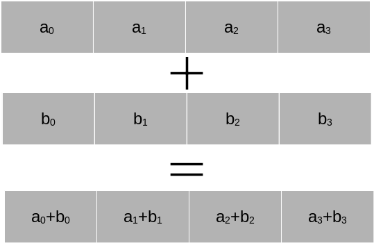

Parallel Computing Principles in Python
Contents
Parallel Computing Principles in Python#
Modern computers are highly parallel systems. Each CPU consists of multiple CPU cores, and within each CPU cores there are vector units that allow the parallel execution of certain operations. In addition, we have GPU accelerators that are highly parallel devices themselves. If we move to larger compute clusters then there is also a level of parallelism between the individual hardware nodes.
In this chapter we will discuss various layers of parallel execution. We will then demonstrate a number of Python tools that help us with parallel execution.
As a simple example we consider the following simple code-block.
import numpy as np
n = 1000000
a = np.random.randn(n)
b = np.random.randn(n)
c = np.empty(n, dtype='float64')
for index in range(n):
c[i] = a[i] + b[i]
We note that instead of the for-loop we could have just written
c = a + b
to let Numpy handle the addition efficiently. But the purpose of this section is to drill a bit deeper and discuss how such a for-loop can be efficiently executed on modern hardware.
SIMD Acceleration#
Almost all modern CPUs support SIMD (Single-Instruction-Multiple-Data) operations using vector registers. The idea is that a CPU core has internal registers that allow the execution of a command on several arguments within a single CPU cycle.We consider the figure below. Let us assume we have a SIMD register \(a\) and a SIMD register \(b\) in the CPU, each of them holding four pieces of data. Then the addition of the four pieces of data can be done all at once within a single CPU cycle.

In principle this allows a factor four speed-up. Most modern CPUs from Intel and AMD support AVX2, a set of CPU instructions that allow to operate on vector registers up to 256 bits in length. This is enough space for four double precision numbers or eight single precision numbers. Not only addition is supported, but a number of operations, including sqrt and multiplication. The most recent standard is AVX-512, which allows simultaneous execution of certain types of 8 double precision or 16 single precision operations. However, this does not usually result in a speed-up of a factor of 8 or 16. CPUs have to reduce their clock speed significantly to execute AVX-512 operations and their invocation is also costly. The outspoken developer of Linux, Linus Torvalds, recently stated that he wishes that “AVX-512 dies a painful death”. The reality is more balanced. For certain HPC and machine learning applications AVX-512 can bring very good speed-ups. Nevertheless, AMD has chosen not to implement AVX-512 in their CPUs and relies on highly optimised AVX2 instructions.
SIMD instructions are a very low-level tool, which we cannot use directly in Python. However, several libraries provide functionality that can take advantage of SIMD instructions, in particular:
Numpy benefits from SIMD if the underlying BLAS library uses SIMD instructions.
The Numexpr library allows the generation of complex transformation over arrays that will be translated to fast SIMD instructions under certain conditions.
The Numba Just-In-Time compiler for Python code can auto-compile certain for-loops into accelerated SIMD code.
We will discuss each of these libraries in more detail later. While there is no direct SIMD control from Python it is important to be aware of SIMD and to use libraries and constructs that guarantee SIMD execution.
Multithreading for parallel loop execution.#
SIMD is a very low-level acceleration within a single CPU core. In order to execute code over several cores we need to use a different technique. In order to understand this we first have to clarify what is meant by a process and what is meant by a thread.
A process within a computer is a self-contained unit of code and associated memory that performs a certain task. Many programs consist of a single process. But some programs use multiple process such as Google Chrome, which has a process for each oben tab. Processes are strictly separated from each other via the operating system, which schedules the execution of processes. A process is not allowed to directly access data from other processes unless through mechanisms provided by the operating system. Moreover, the operating system decides how processes are scheduled onto CPU cores. If you open a task manager, no matter whether Windows, Linux or Mac, you can see dozens or sometimes even hundreds of processes running at the same time.
A thread is an execution stream within a process. All threads within a process share the memory provided by the process and are freely able to read and manipulate each others data. Performant applications are highly multithreaded to take advantage of the existing CPU cores in a computer.
Let us return to the for-loop above. All loop iterations are completely independent of each other. We could execute them in any order, or indeed in parallel. The question is how we can achieve this?
Python provides a threading library that allows the creation of multiple threads that executes within a Python program. It is a bit of code overhead. But we could represent a multithreaded for-loop execution in the following way:
import numpy as np
import threading
import multiprocessing
def worker(arr1, arr2, arr3, chunk):
"""The thread worker."""
for index in chunk:
arr3[index] = arr1[index] + arr2[index]
nthreads = multiprocessing.cpu_count()
n = 1000000
a = np.random.randn(n)
b = np.random.randn(n)
c = np.empty(n, dtype='float64')
chunks = np.array_split(range(n), nthreads)
all_threads = []
for chunk in chunks:
thread = threading.Thread(target=worker, args=(a, b, c, chunk))
all_threads.append(thread)
thread.start()
for thread in all_threads:
thread.join()
How does this code work? We define a worker function that takes as three arguments the arrays that we want to sum and the result array. The parameter chunk is an integer array of indices that specifies the indices of the elements that we want to sum.
The variable nthreads gets the CPU count. We always generate as many threads as there are CPUs in the system.
The variable chunks is a list of arrays that splits up the whole index range into chunks of approximate size n / nthreads.
For each index chunk we now generate a new thread by specifying the worker function as to be executed in the thread and as parameters the arrays a, b, and c and the current index set chunk. The thread is then started. After calling start the next for-loop iteration starts without the thread having to be finished already. The threads run independently of each other.
After all threads are started we are waiting for the thread execution to finish by calling the join function for each thread. The join function blocks execution until the work inside the thread has concluded.
This way of specifying a thread is very typical and threads in most programming languages follow a similar pattern.
Get to know the GIL#
So far so good. There is only one problem. This code is actually not executing in parallel! The reason is a unique feature of Python, called the GIL (Global Interpreter Lock). When Python was first developed it was decided that only one thread at a time would be able to call into the Python interpreter. There are very good technical performance reason for this choice. But the consequence is that Python threads are not really executing in parallel since when one thread is calling into the interpreter to execute a Python command the other threads have to wait.
So why does threading exist at all in Python? Python threads make sense for I/O bound applications. Consider for example a webserver that is waiting for incoming network connections. You can have one thread waiting for the network while another thread is doing actual work. As long as a thread is not using the GIL another thread can use the interpreter.
Numba - Parallel threading without GIL#
Numba is a library for the Just-In-Time compilation of Python code into low-level machine code that does not require the Python interpreter. We will dive into Numba in a separate session. The beauty about Numba is that since Numba compiled functions do not require the Python interpreter, they execute without having to call into the GIL. This allows to create parallel executing threads independent of the Python interpreter, delivering optimal performance on multicore CPUs. A parallel version of the vector addition in Numba is given below.
import numpy as np
import numba
n = 1000000
a = np.random.randn(n)
b = np.random.randn(n)
c = np.empty(n, dtype='float64')
@numba.njit(parallel=True)
def numba_fun(arr1, arr2, arr3):
"""The thread worker."""
for index in numba.prange(n):
arr3[index] = arr1[index] + arr2[index]
numba_fun(a, b, c)
In the above example we tell Numba to just-in-time compile the function numba_fun. The function prange tells Numba that the corresponding for-loop can be parallelised. Numba automatically splits this for-loop into threads that work independently. Since Numba compiles the function into direct machine code that does not require the Python interpreter, the GIL does not interfere.
An alternative solution - Process based parallel processing#
Python has an alternative solution for parallel execution. We discussed above that threading in Python is limited by the GIL. The solution is process based parallelisation. Instead of multiple threads we use multiple Python processes, each with its own GIL and memory space. The multiprocessing module in Python makes dealing with process based parallelisation easy. Below you find the above threading example, but using only the multiprocessing module.
import numpy as np
import multiprocessing
import ctypes
def worker(arr1, arr2, arr3, chunk):
"""The thread worker."""
# Create Numpy arrays from the
# shared multiprocessing arrays
arr1_np = np.frombuffer(arr1.get_obj())
arr2_np = np.frombuffer(arr2.get_obj())
arr3_np = np.frombuffer(arr3.get_obj())
for index in chunk:
arr3_np[index] = arr1_np[index] + arr2_np[index]
nprocesses = multiprocessing.cpu_count()
n = 1000000
a = multiprocessing.Array(ctypes.c_double, n)
b = multiprocessing.Array(ctypes.c_double, n)
c = multiprocessing.Array(ctypes.c_double, n)
a[:] = np.random.randn(n)
b[:] = np.random.randn(n)
chunks = np.array_split(range(n), nprocesses)
all_processes = []
for chunk in chunks:
process = multiprocessing.Process(target=worker, args=(a, b, c, chunk))
all_processes.append(process)
process.start()
for process in all_processes:
process.join()
This example is very similar to the threading example. The main difference is the variable initialisation. Processes do not share the same memory. The multiprocessing module can copy over variables on intialisation automatically to the different processes. However, this is inefficient for large arrays, and we cannot easily write into a large array. The solution is to create shared arrays. These are special structures that can be accessed from all processes. The multiprocessing.Array type serves this purpose. It is very low-level. However, we can create a view of them as a Numpy array. This is done through the np.frombuffer command, which creates a Numpy type array based on the shared memory.